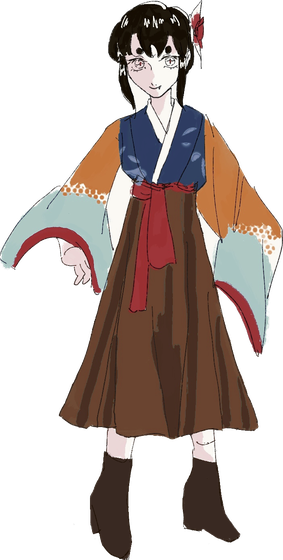
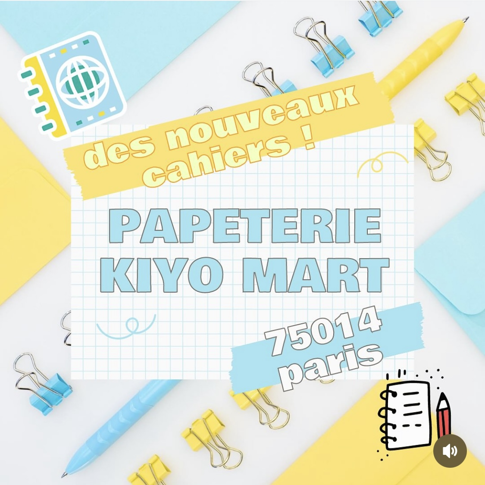
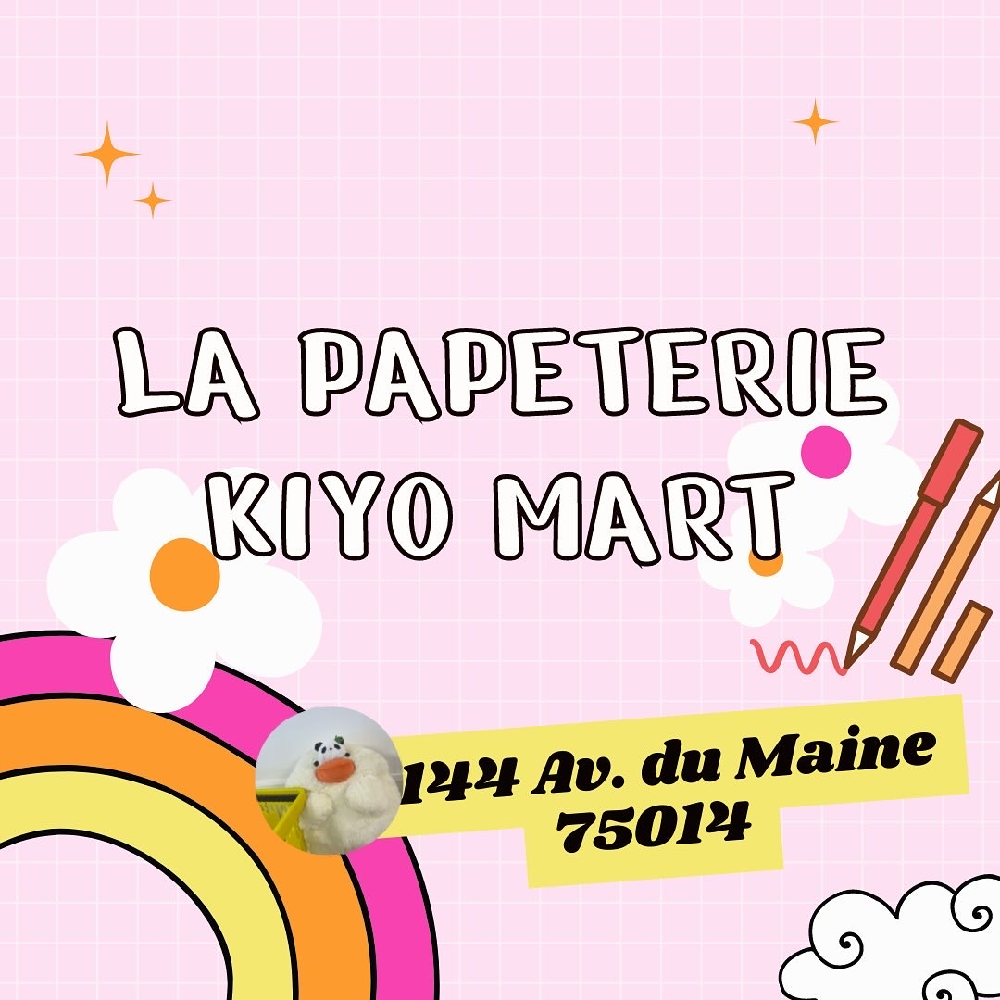

Récit
Roman de fantasy · extrait : Léna et Agnès

Yue QinPortfolio · 作品集
Héhé… Quelle force mystérieuse a donc guidé vos pas jusqu'ici ?
Tiens ? Vous voulez en savoir plus sur moi ?
À propos de moiHoho… 4 vidéos en 2 mois, c'est bien ce qu'on appelle « faire du contenu » chez les jeunes ? Cliquez sur l'une d'elles pour lancer le son et lire mes notes.
Boutique asiatique : snacks, papeterie, goodies manga et kawaii.
Réalisé seule, de A à ZDe 1 091 à 30,6 k vues par vidéo, en deux mois.
4 vidéos : 56 k vues · 2 501 j'aime · 711 enregistrements · 420 partages
Sur Instagram, je réalisais aussi les visuels. Voici deux couvertures faites sur Canva.
Des visuels à l'image de la boutique : papeterie colorée, typographie ronde, adresse bien lisible.


Vous souhaitez me joindre ? Voici les formules pour m'invoquer.
Ma présentation complète arrive bientôt.
Trois manuscrits… Que peuvent-ils bien renfermer ?
Roman de fantasy · extrait : Léna et Agnès
Idée, personnages, structure
BientôtTextes de marketing pour les réseaux
Bientôt